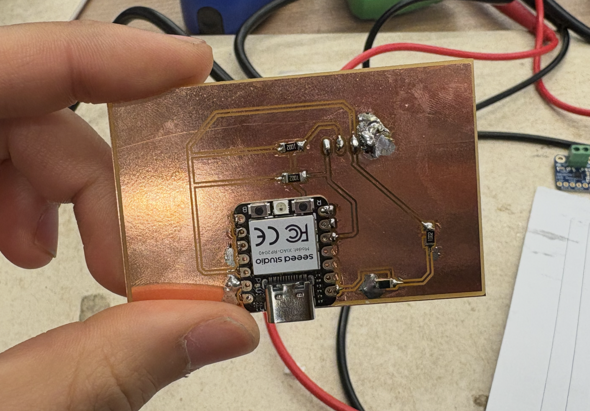
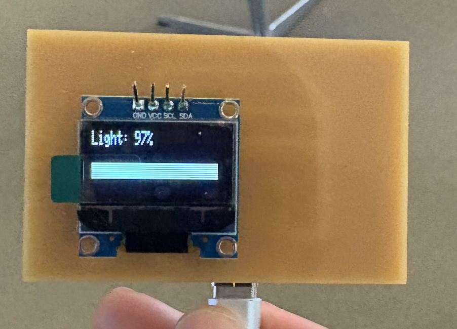
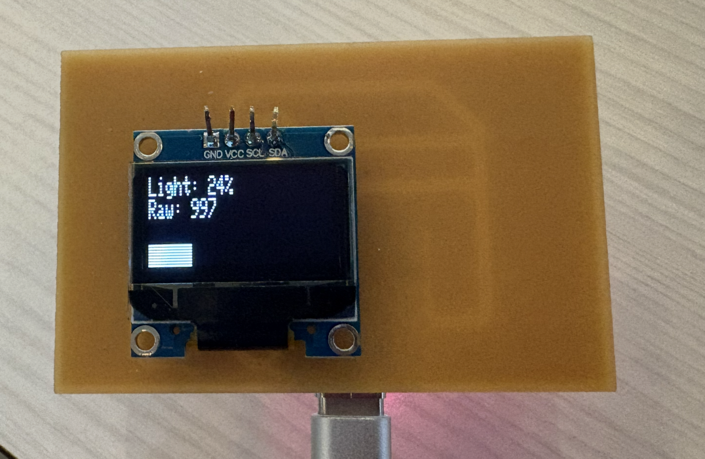

Week 9: Output Devices
This week is a combination of some of the previous weeks' topics, so not too much that is new. Last week, the board that I had soldered and made didn't work — never turned out, and I realize it was because of a mix of not testing if my solder didn't cause a short and not having a good enough connection to the board. You can look at the original design in Week 6.

This week, I stuck with the same pads design but did some more research on the phototransistor and fixed the soldering.

Then, I flashed a simple program to take in the data from the phototransistor and display it on the OLED display.
#include
#include
#include
#define SCREEN_WIDTH 128
#define SCREEN_HEIGHT 32
#define OLED_RESET -1
Adafruit_SSD1306 display(SCREEN_WIDTH, SCREEN_HEIGHT, &Wire, OLED_RESET);
const int PHOTO_PIN = A0; // P26_A0_D0
void setup() {
pinMode(PHOTO_PIN, INPUT);
Wire.setSDA(6); // P6_D4_SDA
Wire.setSCL(7); // P7_D5_SCL
Wire.begin();
if(!display.begin(SSD1306_SWITCHCAPVCC, 0x3C)) {
while(1);
}
display.clearDisplay();
display.setTextSize(1);
display.setTextColor(SSD1306_WHITE);
display.display();
}
void loop() {
int raw = analogRead(PHOTO_PIN);
int light = map(raw, 0, 4095, 0, 100); // 12-bit range
display.clearDisplay();
display.setCursor(0, 0);
display.print("Light: ");
display.print(light);
display.print("%");
// debug - add raw value
display.setCursor(0, 8);
display.print("Raw: ");
display.print(raw);
int barWidth = map(light, 0, 100, 0, SCREEN_WIDTH);
display.fillRect(0, 24, barWidth, 8, SSD1306_WHITE);
display.display();
delay(100);
}


It turns out there might have been a few mistakes in my initial PCB footprint design. I'm using a Q_PHOTOTRANSISTOR_NPN, which might mean that there's a slightly different direction and footprint to the standard one. For an NPN phototransistor:
- collector (anode, usually unmarked end) → R2 → 3V3
- emitter (cathode, green marked end) → P26 → R3 → GND
I had the phototransistor's emitter connected to the ground, but it should be connected to the 3V3 power supply. Todo: I plan on flipping the phototransistor 180 degrees and this should just fix the issue!
(Analog) Speaker
Yes, all speakers are "analog," but after taking more of 6.3000, I wanted to make something that would work a bit with simple waveforms. The piezo disk generates voltage when you physically deform them, they're pressure-to-electricity converters. They have a crystal structure inside with asymmetric charge distribution, that, when you squeeze/bend/tap it, the lattice deforms and the charges move, creating a voltage spike.

Here, I'm driving a 'speaker' with pulse width modulation (PWM) (which is a technique used to encode information in a digital signal) through a potentiometer as volumn control. My PA6 pin will rapidly switch between high/low at audio frequencies and the piezo disk will generate a voltage spike at the same frequency, creating a buzzing sound.

The potentiometer is being read in software, where then I will scale the PWM signal to do some sort of pitch control. I use a n-channel MOSFET before the piezo because they can act as a switch. When the signal from PA6 goes high, the mosfet conducts and dumps current through the piezo from the VCC power supply, and when it goes low, it blocks (which helps, because otherwise the piezo would be buzzing just when I connect the board to power).